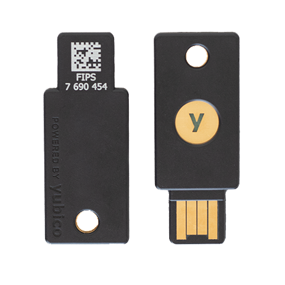

Secure authentication is crucial for protecting access to these accounts
What is Authentication?
Authentication is a term used to convey the idea that some means has been provided to guarantee that entities are who they claim to be, or that information has not been manipulated by unauthorized parties.
Entity authentication assures one party (through acquisition of corroborative evidence) of both the identity of a second party involved, and that the second party was active at the time the evidence was created or acquired.
The most common technique is by the verifier checking the correctness of a message (possibly in response to an earlier message) which demonstrates that the claimant is in possesion of a secret associated by design with the genuine party.
(correctness) In case of honest parties, the protocol completes with the verifier B accepting claimant's A identity
(transferability) B cannot reuse an authentification exchange with A so as to successfully impersonate A to a third party C
(impersonation) The probability is negligible that any party C distinct from A, carrying out the protocol and playing the role of A, can cause B to accept A's identity. (negligible means "so small that it is not of practical significance")
The above points remain true even if:
a large number of previous authentications between A and B has been observed,
the attacker C has participated in previous protocol executions with either or both A and B, and
multiple instances of the protocol, possibly initiated by C, are running in parallel.
something known. Examples include standard passwords (sometimes used to derive a symmetric key), Personal Identification Numbers (PINs), and the secret or private keys whose knowledge is demonstrated in challenge-response protocols.
something possessed. This is typically a physical accessory, resembling a metal key or passport function. Examples include magnetic-striped cards, chipcards (like your bank or credit card), and customized generators which provide time-variant passwords.
something inherent (to a human or a machine). This category includes methods which make use of human or machine physical characteristics and involuntary actions (biometrics), such as handwritten signatures, fingerprints, voice, dynamic keyboard characteristics, or physical unclonable functions.
Passwords is the prevailent form of authentication in the internet. (And it's likely here to stay because it's the most versatile and – I would argue* – easiest to use method).
* for all practical purposes, a password works with (almost) any user interface, its use is uniform across different systems, and you can't loose it (you "only" need to remember it).
Security of Password-based Authentication
Security of password-based authentication essentially* relies on the assumption that the attacker cannot guess the password (either directly via the API or indirectly via rainbow tables)
* as an alternative, the attacker could also trick its victim into disclosing the password (e.g., using phishing or other social engineering techniques), but this applies to other authentication methods as well.
Strong passwords needed!
Examples?
tzYjcOnT}XTBt@S+Y0i5o|
'Rt},<|sh:V0F~zi^=@1Jj
G"8J*9Tv)Iw*RW&lx,ZAgY
The Problem with Password-based Authentication
In practice, strong passwords are impossible to memorize, especially if you need dozens of them. As a result, most users choose simple – i.e., weak – passwords and re-use them across multiple accounts and online services.
Can We Improve This?
Multi-factor Authentication!
What is multi-factor authentication?
It's an authentication method that uses two or more pieces of evicence (so-called factors). The factors can be based on:
unique knowledge (something the user and only the user knows),
unique possession (something the user and only the user has) or
unique inherence (something the user and only the user is).
One specific type of multi-factor authentication is the Two-factor Authentication (2FA). 2FA is an authentication method that uses some combination of two different factors (typically, something the user knows and something the user has).
Two-Factor Authentication and Universal 2nd Factor (U2F)
Universal 2nd Factor (U2F)
U2F is an open authentication standard that implements 2FA. It enables internet users to securely access any number of online services with one single security key – specialized Universal Serial Bus (USB) or Near-Field Communication (NFC) device – instantly and with no drivers or client software needed.
The U2F standard is hosted and maintained by the FIDO ("Fast IDentity Online") Alliance, an open industry association launched in 2013 to develop and promote authentication standards that help reduce the over-reliance on passwords. FIDO Alliance has 260+ members including companies like Apple, Google, Facebook, Amazon, Intel, Infineon, Visa, American Express, and Samsung.
The FIDO Alliance mission is to change the nature of online strong authentication.
FIDO Alliance's primary objective is to enable online services and websites, whether on the open internet or within enterprises, to leverage native security features of end-user computing devices for strong user authentication and to reduce the problems associated with creating and remembering many online credentials.
Together, these specifications are known as FIDO 2.
FIDO2 supports passwordless, second-factor and multi-factor authentication with embedded (or bound) authenticators (such as biometrics or PINs) or external (or roaming) authenticators (such as FIDO Security Keys, mobile devices, wearables, etc). The complementary W3C's WebAuthn specification defines a standard web API that is being built into browsers and platforms to enable support for FIDO Authentication.
The UAF protocol allows online services to offer password-less and multi-factor authentication.
The user registers their device to the online service by selecting a local authentication mechanism such as swiping a finger, looking at the camera, speaking into the mic, entering a PIN, etc.
Once registered, the user simply repeats the local authentication action whenever they need to authenticate to the service. (The user no longer needs to enter their password when authenticating from that device.)
The Universal 2nd Factor (U2F) Protocol allows online services to augment the security of their existing password infrastructure by adding a strong second factor to user login. The user logs in with a username and password as before. The service can also prompt the user to present a second factor device at any time it chooses.
U2F predates FIDO2. With the release of FIDO2 specification, U2F became part of the FIDO2 CTAP specification and was relabeled CTAP1 (or CTAP1/U2F). The CTAP1/U2F protocol allows the use of existing FIDO U2F devices (such as FIDO Security Keys) for a second-factor authentication on FIDO2-enabled browsers and operating systems over USB, NFC, or BLE.
CTAP1/U2F is defined by the U2F Raw Messages specification. The CTAP1/U2F messages have an APDU-like binary structure. CTAP1/U2F may also be referred to as CTAP 1.2 or U2F 1.2. The latter was the U2F specification version used as the basis for several portions of the CTAP1 specification.
The CTAP2 protocol allows the use of external authenticators (FIDO Security Keys, mobile devices) for authentication on FIDO2-enabled browsers and operating systems over USB, NFC, or BLE for a passwordless, second-factor or multi-factor authentication.
Unlike CTAP1, the CTAP2 protocol messages are encoded in the CTAP2 canonical CBOR encoding form. But both CTAP1/U2F and CTAP2 share the same underlying transports: USB Human Interface Device (USB HID), Near Field Communication (NFC), and Bluetooth Smart / Bluetooth Low Energy (BLE).
U2F: Strong Authentication and Privacy for the Web
The U2F eco-system is designed to provide strong authentication for users on the web while preserving the user's privacy. The user carries a 'U2F device' as a second factor.

The U2F device can be embodied in various form factors, such as stand alone USB devices, stand alone Near Field Communication (NFC) devices, stand alone Bluetooth LE devices, built-on-board the user's client machine/mobile device as pure software or utilizing secured crypto capabilities. It is strongly preferable to have hardware backed security.
U2F: Strong Authentication and Privacy for the Web
When the user registers the U2F device at an account at a particular origin (such as http://www.company.com) the device creates a new key pair usable only at that origin and gives the origin the public key to associate with the account. When the user authenticates (i.e., logs in) to the origin, in addition to username and password, the origin (in this case, http://www.company.com) can check whether the user has the U2F device by verifying a signature created by the device.
U2F: Strong Authentication and Privacy for the Web
The user is able to use the same device across multiple web services: it serves as the user's physical web key chain with multiple keys to various sites provisioned from one physical device. Using the open U2F standard, any origin can use any U2F-compliant browser (or OS) to talk to any U2F compliant device.
At the core of the protocol, the U2F device has a capability (ideally, embodied in a secure element) to generate an origin-specific public/private key pair. During user registration, the browser sends the U2F device a hash of the origin (combination of protocol, hostname and port); the U2F device returns a public key and a key handle. Very importantly, the U2F device encodes the requesting origin into the key handle. Finally, the browser sends the public key and the key handle to the origin online service or website.
Later, when the user performs an authentication, the origin online service or website sends the user's key handle and a nonce (challenge) to the browser. The browser, in turn, sends this key handle, the nonce, and the hash of the origin which is requesting the authentication to the U2F device. The U2F device first verifies it had issued this key handle to that particular origin, then uses the key handle to identify the user's private key, and creates a signature (using the nonce) which is sent back to the origin (via the browser) to verify the presence of the U2F device. Thus, the key handle is simply an identifier of a particular key on the U2F device.
The origin check ensures that the public keys and key handles issued by a U2F device to a particular online service or website cannot be used by a different online service or website. This is critical to ensure the user's privacy. If the browser works as it should, a site can verify identity with a user's U2F device only with a key which has been issued to that particular site by that particular U2F device. If this origin check was not present, then a public key and key handle issued by a U2F device could be used as a 'supercookie' allowing multiple colluding sites to verify and correlate a particular user's identity.
Alerting the User: U2F Device Activation & Browser Infobars
Every U2F device has a physical user presence test. The user touches a button (or a sensor of some other kind) to activate the U2F device:
During registration, the U2F device responds to a request to generate a key pair only if it has been activated. In addition, the browser might display an infobar asking the user whether she/he wants to allow the current site to register the U2F device.
During authentication, the browser sends data to the U2F device that it needs to sign. The U2F device can be requested to require a test of user presence before it will sign. This ensures that a signature happens only with the user's permission and that malware cannot invoke the signature generation when the user is not present.
Resilience Against Man-In-The-Middle (MITM) Attacks
The U2F device verifies the key handle and the origin verifies the signature produced by the U2F device. However, U2F's security against MITM attacks essentially relies on TLS security. As an example, it is possible to MITM a user's authentication to a site if the MITM is:
able to get a server cert for the actual origin name issued by a valid CA, and
A key goal of the U2F specification is to enable inexpensive yet secure devices. To achieve this, U2F devices have minimal or no on-chip memory.
The key handle does not have to be an index to the private key stored on the U2F device. Instead, the key handle can store (i.e., contain) the private key for the origin and the hash of the origin encrypted with a wrapping key known only to the U2F device secure element. When the key handle is passed to the U2F device, it unwraps it to retrieve the private key and the origin that it was generated for.
Alternatively, the U2F device can store the wrapped information in a table in off-chip memory. In this case, the key handle would be an index into this table in off-chip memory.
A U2F device must be certified by a certification authority to ensure that it uses strong cryptography and is properly implemented. The origin needs to able to identify the type of U2F device it is speaking to so it can verify that the U2F device type has the desired characteristics. For example, a financial services site may choose to only accept hardware-backed U2F devices, while some other site may allow U2F devices implemented in software.
Every U2F device has a shared attestation key pair present on it. This key is shared across a large number of U2F device units made by the same vendor (this is to prevent individual identifiability of the U2F device). The attestation key is used to sign messages during the registration step of the U2F device.
The U2F protocol incorporates a usage counter to allow the origin to detect problems in some circumstances. The U2F device stores the number of signature operations it has performed (either per key pair, per set of keys, or globally). The U2F device sends the actual counter value back to the browser which relays it to the origin after every signing operation. The U2F device also concatenates the counter value on to the hash of the client data before signing so that the origin can strongly verify that the counter value was not tampered with (by the browser).
The server compares the counter value received from the U2F device to a stored counter value from earlier interactions with the same U2F device. If the counter value has moved backward, it would signal that there is more than one U2F device with the same key pair for the origin (i.e., a clone of the U2F device has been created at some point).
Registering Multiple U2F Devices to the Same Account
U2F does not limit the user to have a single device registered at a particular origin. If a user has registered multiple U2F devices within a single origin, then all the key handles are sent by the origin to the web browser during authentication. The web browser calls the javascript signature function with the array of key handles and sends the aggregated response back to the origin. Each attached activated U2F device signs for those key handles in the array that it recognizes.